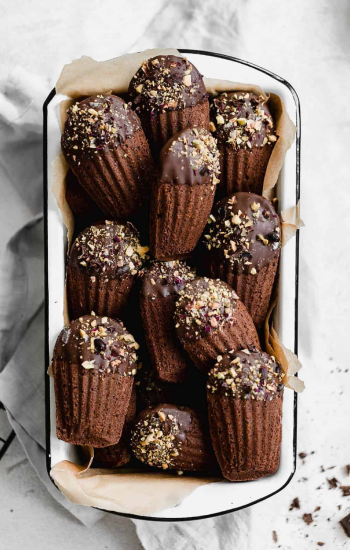

About us
Q1. 需要事先訂位嗎?
▽
為了滿足顧客多方面的需求，並將訂位服務做到最好，我們開放一個月內的訂位，建議您可以直接撥打服務專線，即可保留您想要的甜點時間喔！
Q2. 請問有最低消費嗎?
▽
jardin sucré有最低消費門檻，每人最低需消費乙份甜點。
Q3. 請問消費可以刷卡嗎?
▽
Le jardin sucré皆有提供刷卡服務，此外也接受line pay付款喔!
About the desserts
Q4. 請問甜點有提供外帶服務嗎?
▽
Le jardin sucré提供外帶服務喔，所有餐點皆可外帶。
Q5. 甜點的保存期限與食用方法?
▽
甜點皆請於2-3天內享用完畢喔。
1.瑪德蓮: 屬常溫蛋糕，留在密封容器中，可保存三天，冷藏則可保存一個星期。
2.檸檬塔 熔岩巧克力 蒙布朗 馬卡龍 千層酥 : 如果沒有要馬上吃需要冷藏喔，甜點的最佳品嚐溫度是5度，離開冷藏以後5-10分鐘吃，口感最好。
3.可麗露: 請置於冷凍保存，冷凍後想要食用，只要放於室內等待5-10分鐘即可，仍會帶有脆軟口感。
Q6. 請問甜點退換貨問題?
▽
甜點因保存期限及衛生考量，一經拆封食用或非運送過程失溫導致甜點變質者，恕無法接受退換貨喔!